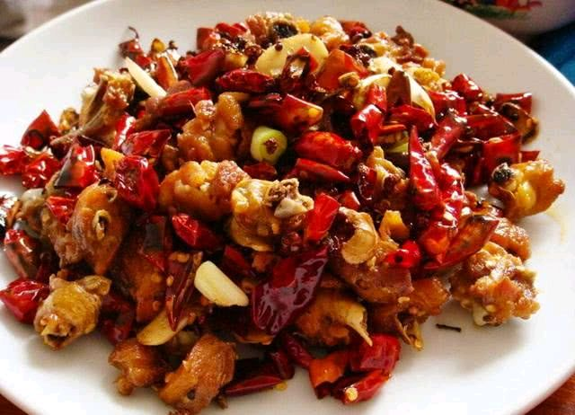
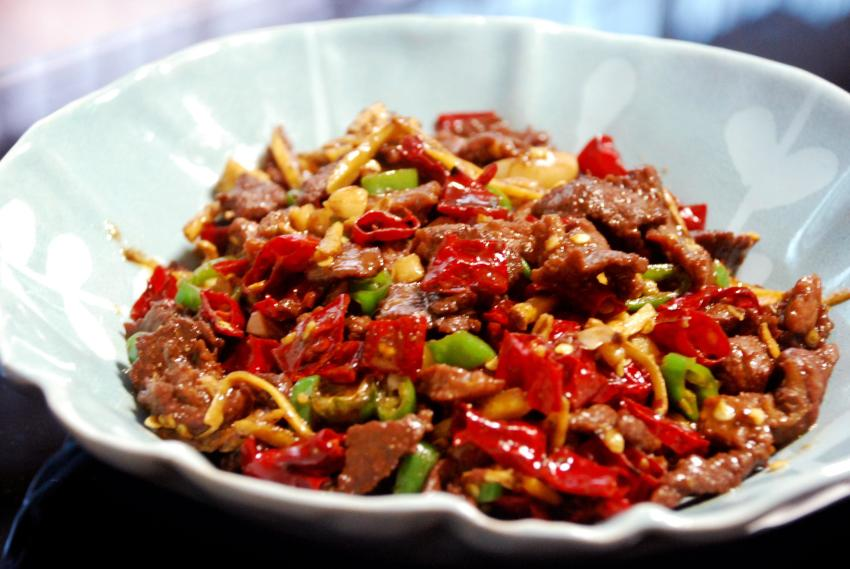
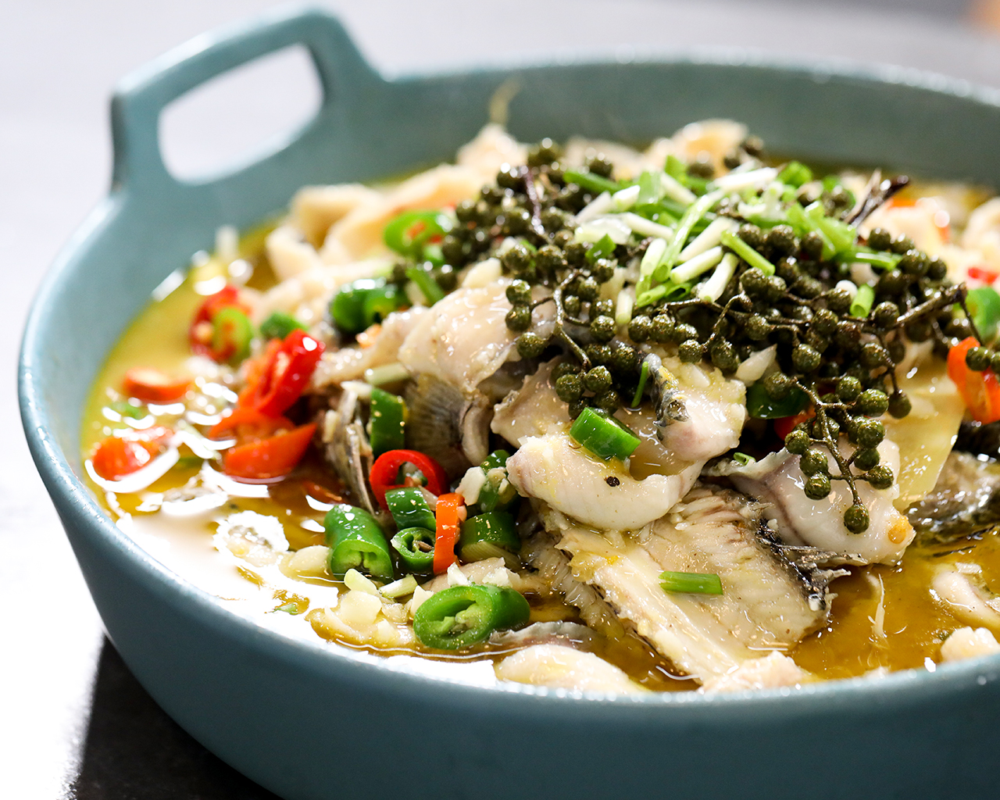
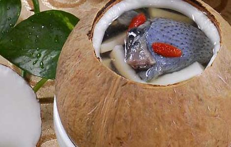
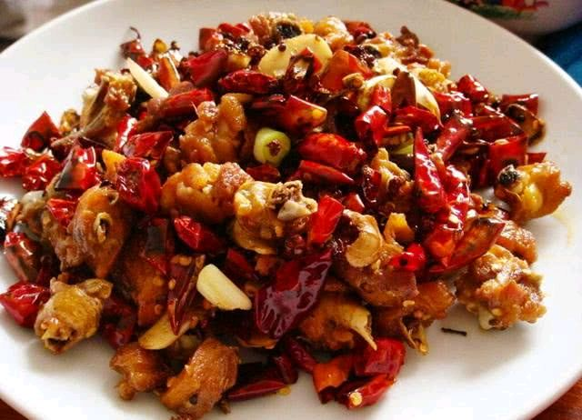
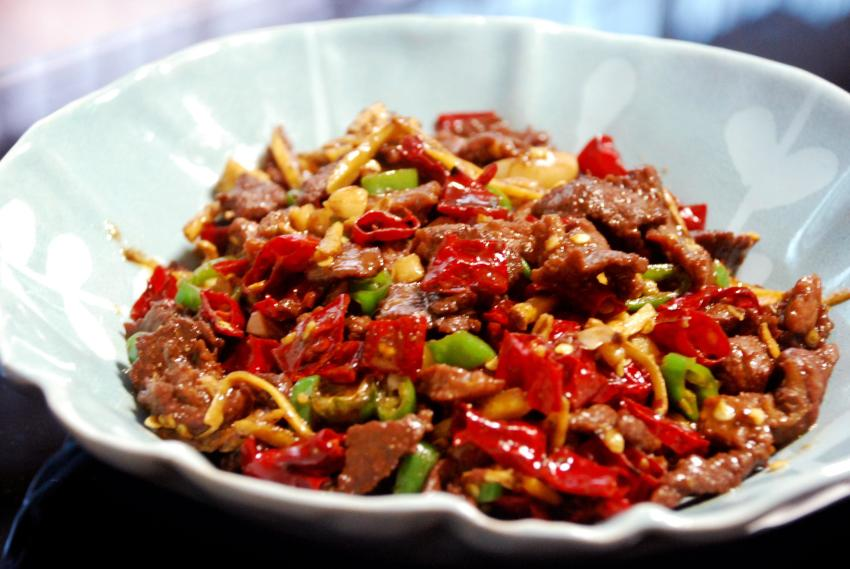
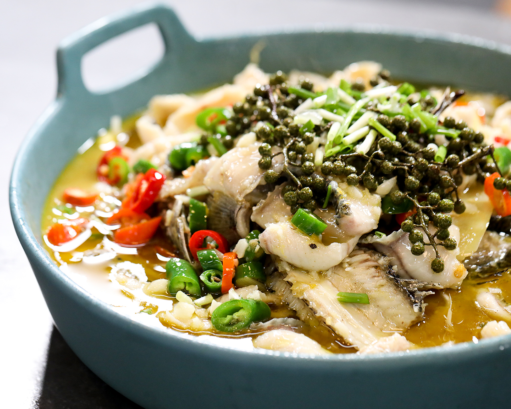
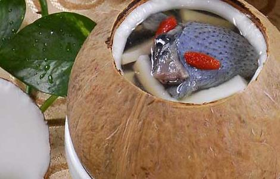

The Tradition
Beijing-Shandong cuisine
As the only northern Chinese cuisine and the oldest with the longest history, Shandong cuisine is the representative of traditional Chinese cuisine.
KnifeWork
Huaian-Yangzhou cuisine
On behalf of the delicate KnifeWork which is a prominent feature for Chinese cuisine, Huaiyang cuisine is famous for making exquisite dishes.
Gallery

 






